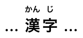
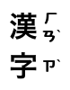
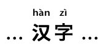
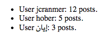
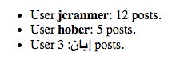

a elementhref attribute: Interactive content.a element descendant, or descendant with the tabindex attribute specified.href — Address of the hyperlink
target — Navigable for hyperlink navigation
download — Whether to download the resource instead of navigating to it, and its filename if so
ping — URLs to ping
rel — Relationship between the location in the document containing the hyperlink and the destination resource
hreflang — Language of the linked resource
type — Hint for the type of the referenced resource
referrerpolicy — Referrer policy for fetches initiated by the element
href attribute: for authors; for implementers.[Exposed=Window]
interface HTMLAnchorElement : HTMLElement {
[HTMLConstructor] constructor();
[CEReactions, Reflect] attribute DOMString target;
[CEReactions, Reflect] attribute DOMString download;
[CEReactions, Reflect] attribute USVString ping;
[CEReactions, Reflect] attribute DOMString rel;
[SameObject, PutForwards=value, Reflect="rel"] readonly attribute DOMTokenList relList;
[CEReactions, Reflect] attribute DOMString hreflang;
[CEReactions, Reflect] attribute DOMString type;
[CEReactions] attribute DOMString text;
[CEReactions] attribute DOMString referrerPolicy;
// also has obsolete members
};
HTMLAnchorElement includes HTMLHyperlinkElementUtils;If the a element has an href attribute,
then it represents a hyperlink (a hypertext anchor) labeled by its
contents.
If the a element has no href attribute,
then the element represents a placeholder for where a link might otherwise have been
placed, if it had been relevant, consisting of just the element's contents.
The target, download, ping,
rel, hreflang, type,
and referrerpolicy attributes must be omitted
if the href attribute is not present.
If the itemprop attribute is specified on an a element,
then the href attribute must also be specified.
If a site uses a consistent navigation toolbar on every page, then the link that would
normally link to the page itself could be marked up using an a element:
<nav>
<ul>
<li> <a href="/">Home</a> </li>
<li> <a href="/news">News</a> </li>
<li> <a>Examples</a> </li>
<li> <a href="/legal">Legal</a> </li>
</ul>
</nav>The href, target, download, ping,
and referrerpolicy attributes affect what
happens when users follow hyperlinks or download hyperlinks created using the a
element. The rel, hreflang, and type
attributes may be used to indicate to the user the likely nature of the target resource before the
user follows the link.
a.textSame as textContent.
The IDL attribute referrerPolicy must reflect the referrerpolicy content attribute, limited to
only known values.
The text
attribute's getter must return this element's descendant text content.
The text attribute's setter must string replace
all with the given value within this element.
The a element can be wrapped around entire paragraphs, lists, tables, and so
forth, even entire sections, so long as there is no interactive content within (e.g., buttons or
other links). This example shows how this can be used to make an entire advertising block into a
link:
<aside
<h1>Advertising</h1>
<a href="https://ad.example.com/?adid=1929&pubid=1422">
<section>
<h1>Mellblomatic 9000!</h1>
<p>Turn all your widgets into mellbloms!</p>
<p>Only $9.99 plus shipping and handling.</p>
</section>
</a>
<a href="https://ad.example.com/?adid=375&pubid=1422">
<section>
<h1>The Mellblom Browser</h1>
<p>Web browsing at the speed of light.</p>
<p>No other browser goes faster!</p>
</section>
</a>
</aside>The following example shows how a bit of script can be used to effectively make an entire row in a job listing table a hyperlink:
<table>
<tr>
<th>Position
<th>Team
<th>Location
<tr>
<td><a href="/jobs/manager">Manager</a>
<td>Remotees
<td>Remote
<tr>
<td><a href="/jobs/director">Director</a>
<td>Remotees
<td>Remote
<tr>
<td><a href="/jobs/astronaut">Astronaut</a>
<td>Architecture
<td>Remote
</table>
<script>
document.querySelector("table").onclick = ({ target }) => {
if (target.parentElement.localName === "tr") {
const link = target.parentElement.querySelector("a");
if (link) {
link.click();
}
}
}
</script>em elementHTMLElement.The em element represents stress emphasis of its contents.
The level of stress that a particular piece of content has is given by its number of ancestor
em elements.
The placement of stress emphasis changes the meaning of the sentence. The element thus forms an integral part of the content. The precise way in which stress is used in this way depends on the language.
These examples show how changing the stress emphasis changes the meaning. First, a general statement of fact, with no stress:
<p>Cats are cute animals.</p>By emphasizing the first word, the statement implies that the kind of animal under discussion is in question (maybe someone is asserting that dogs are cute):
<p><em>Cats</em> are cute animals.</p>Moving the stress to the verb, one highlights that the truth of the entire sentence is in question (maybe someone is saying cats are not cute):
<p>Cats <em>are</em> cute animals.</p>By moving it to the adjective, the exact nature of the cats is reasserted (maybe someone suggested cats were mean animals):
<p>Cats are <em>cute</em> animals.</p>Similarly, if someone asserted that cats were vegetables, someone correcting this might emphasize the last word:
<p>Cats are cute <em>animals</em>.</p>By emphasizing the entire sentence, it becomes clear that the speaker is fighting hard to get the point across. This kind of stress emphasis also typically affects the punctuation, hence the exclamation mark here.
<p><em>Cats are cute animals!</em></p>Anger mixed with emphasizing the cuteness could lead to markup such as:
<p><em>Cats are <em>cute</em> animals!</em></p>The em element isn't a generic "italics" element. Sometimes, text is intended to
stand out from the rest of the paragraph, as if it was in a different mood or voice. For this,
the i element is more appropriate.
The em element also isn't intended to convey importance; for that purpose, the
strong element is more appropriate.
strong elementHTMLElement.The strong element represents strong importance, seriousness, or
urgency for its contents.
Importance: the strong element can be used in a heading, caption,
or paragraph to distinguish the part that really matters from other parts that might be more
detailed, more jovial, or merely boilerplate. (This is distinct from marking up subheadings, for
which the hgroup element is appropriate.)
For example, the first word of the previous paragraph is marked up with
strong to distinguish it from the more detailed text in the rest of the
paragraph.
Seriousness: the strong element can be used to mark up a warning
or caution notice.
Urgency: the strong element can be used to denote contents that
the user needs to see sooner than other parts of the document.
The relative level of importance of a piece of content is given by its number of ancestor
strong elements; each strong element increases the importance of its
contents.
Changing the importance of a piece of text with the strong element does not change
the meaning of the sentence.
Here, the word "chapter" and the actual chapter number are mere boilerplate, and the actual
name of the chapter is marked up with strong:
<h1>Chapter 1: <strong>The Praxis</strong></h1>In the following example, the name of the diagram in the caption is marked up with
strong, to distinguish it from boilerplate text (before) and the description
(after):
<figcaption>Figure 1. <strong>Ant colony dynamics</strong>. The ants in this colony are
affected by the heat source (upper left) and the food source (lower right).</figcaption>In this example, the heading is really "Flowers, Bees, and Honey", but the author has added a
light-hearted addition to the heading. The strong element is thus used to mark up
the first part to distinguish it from the latter part.
<h1><strong>Flowers, Bees, and Honey</strong> and other things I don't understand</h1>Here is an example of a warning notice in a game, with the various parts marked up according to how important they are:
<p><strong>Warning.</strong> This dungeon is dangerous.
<strong>Avoid the ducks.</strong> Take any gold you find.
<strong><strong>Do not take any of the diamonds</strong>,
they are explosive and <strong>will destroy anything within
ten meters.</strong></strong> You have been warned.</p>In this example, the strong element is used to denote the part of the text that
the user is intended to read first.
<p>Welcome to Remy, the reminder system.</p>
<p>Your tasks for today:</p>
<ul>
<li><p><strong>Turn off the oven.</strong></p></li>
<li><p>Put out the trash.</p></li>
<li><p>Do the laundry.</p></li>
</ul>small elementHTMLElement.The small element represents side comments such as small print.
Small print typically features disclaimers, caveats, legal restrictions, or copyrights. Small print is also sometimes used for attribution, or for satisfying licensing requirements.
The small element does not "de-emphasize" or lower the importance of
text emphasized by the em element or marked as important with the strong
element. To mark text as not emphasized or important, simply do not mark it up with the
em or strong elements respectively.
The small element should not be used for extended spans of text, such as multiple
paragraphs, lists, or sections of text. It is only intended for short runs of text. The text of a
page listing terms of use, for instance, would not be a suitable candidate for the
small element: in such a case, the text is not a side comment, it is the main content
of the page.
The small element must not be used for subheadings; for that purpose, use the
hgroup element.
In this example, the small element is used to indicate that value-added tax is
not included in a price of a hotel room:
<dl>
<dt>Single room
<dd>199 € <small>breakfast included, VAT not included</small>
<dt>Double room
<dd>239 € <small>breakfast included, VAT not included</small>
</dl>In this second example, the small element is used for a side comment in an
article.
<p>Example Corp today announced record profits for the
second quarter <small>(Full Disclosure: Foo News is a subsidiary of
Example Corp)</small>, leading to speculation about a third quarter
merger with Demo Group.</p>This is distinct from a sidebar, which might be multiple paragraphs long and is removed from the main flow of text. In the following example, we see a sidebar from the same article. This sidebar also has small print, indicating the source of the information in the sidebar.
<aside>
<h1>Example Corp</h1>
<p>This company mostly creates small software and Web
sites.</p>
<p>The Example Corp company mission is "To provide entertainment
and news on a sample basis".</p>
<p><small>Information obtained from <a
href="https://example.com/about.html">example.com</a> home
page.</small></p>
</aside>In this last example, the small element is marked as being important
small print.
<p><strong><small>Continued use of this service will result in a kiss.</small></strong></p>s elementHTMLElement.The s element represents contents that are no longer accurate or no
longer relevant.
The s element is not appropriate when indicating document edits; to
mark a span of text as having been removed from a document, use the del element.
In this example a recommended retail price has been marked as no longer relevant as the product in question has a new sale price.
<p>Buy our Iced Tea and Lemonade!</p>
<p><s>Recommended retail price: $3.99 per bottle</s></p>
<p><strong>Now selling for just $2.99 a bottle!</strong></p>cite elementHTMLElement.The cite element represents the title of a work (e.g.
a book,
a paper,
an essay,
a poem,
a score,
a song,
a script,
a film,
a TV show,
a game,
a sculpture,
a painting,
a theatre production,
a play,
an opera,
a musical,
an exhibition,
a legal case report,
a computer program,
etc.). This can be a work that is being quoted or referenced in detail (i.e., a
citation), or it can just be a work that is mentioned in passing.
A person's name is not the title of a work — even if people call that person a piece of
work — and the element must therefore not be used to mark up people's names. (In some cases,
the b element might be appropriate for names; e.g. in a gossip article where the
names of famous people are keywords rendered with a different style to draw attention to them. In
other cases, if an element is really needed, the span element can be
used.)
This next example shows a typical use of the cite element:
<p>My favorite book is <cite>The Reality Dysfunction</cite> by
Peter F. Hamilton. My favorite comic is <cite>Pearls Before
Swine</cite> by Stephan Pastis. My favorite track is <cite>Jive
Samba</cite> by the Cannonball Adderley Sextet.</p>This is correct usage:
<p>According to the Wikipedia article <cite>HTML</cite>, as it
stood in mid-February 2008, leaving attribute values unquoted is
unsafe. This is obviously an over-simplification.</p>The following, however, is incorrect usage, as the cite element here is
containing far more than the title of the work:
<!-- do not copy this example, it is an example of bad usage! -->
<p>According to <cite>the Wikipedia article on HTML</cite>, as it
stood in mid-February 2008, leaving attribute values unquoted is
unsafe. This is obviously an over-simplification.</p>The cite element is a key part of any citation in a bibliography, but it is only
used to mark the title:
<p><cite>Universal Declaration of Human Rights</cite>, United Nations,
December 1948. Adopted by General Assembly resolution 217 A (III).</p>A citation is not a quote (for which the q element
is appropriate).
This is incorrect usage, because cite is not for quotes:
<p><cite>This is wrong!</cite>, said Ian.</p>This is also incorrect usage, because a person is not a work:
<p><q>This is still wrong!</q>, said <cite>Ian</cite>.</p>The correct usage does not use a cite element:
<p><q>This is correct</q>, said Ian.</p>As mentioned above, the b element might be relevant for marking names as being
keywords in certain kinds of documents:
<p>And then <b>Ian</b> said <q>this might be right, in a
gossip column, maybe!</q>.</p>q elementcite — Link to the source of the quotation or more information about the edit
HTMLQuoteElement.The q element represents some phrasing
content quoted from another source.
Quotation punctuation (such as quotation marks) that is quoting the contents of the element
must not appear immediately before, after, or inside q elements; they will be
inserted into the rendering by the user agent.
Content inside a q element must be quoted from another source, whose address, if
it has one, may be cited in the cite attribute. The source may be fictional, as when quoting
characters in a novel or screenplay.
If the cite attribute is present, it must be a valid
URL potentially surrounded by spaces. To obtain the corresponding citation
link, the value of the attribute must be parsed
relative to the element's node document. User agents may allow users to follow
such citation links, but they are primarily intended for private use (e.g., by server-side scripts
collecting statistics about a site's use of quotations), not for readers.
The q element must not be used in place of quotation marks that do not represent
quotes; for example, it is inappropriate to use the q element for marking up
sarcastic statements.
The use of q elements to mark up quotations is entirely optional; using explicit
quotation punctuation without q elements is just as correct.
Here is a simple example of the use of the q element:
<p>The man said <q>Things that are impossible just take
longer</q>. I disagreed with him.</p>Here is an example with both an explicit citation link in the q element, and an
explicit citation outside:
<p>The W3C page <cite>About W3C</cite> says the W3C's
mission is <q cite="https://www.w3.org/Consortium/">To lead the
World Wide Web to its full potential by developing protocols and
guidelines that ensure long-term growth for the Web</q>. I
disagree with this mission.</p>In the following example, the quotation itself contains a quotation:
<p>In <cite>Example One</cite>, he writes <q>The man
said <q>Things that are impossible just take longer</q>. I
disagreed with him</q>. Well, I disagree even more!</p>In the following example, quotation marks are used instead of the q element:
<p>His best argument was ❝I disagree❞, which
I thought was laughable.</p>In the following example, there is no quote — the quotation marks are used to name a
word. Use of the q element in this case would be inappropriate.
<p>The word "ineffable" could have been used to describe the disaster
resulting from the campaign's mismanagement.</p>dfn elementdfn element descendants.title attribute has special semantics on this element: Full term or expansion of abbreviation
HTMLElement.The dfn element represents the defining instance of a term. The paragraph, description list group, or section that is the nearest ancestor of the dfn
element must also contain the definition(s) for the term given
by the dfn element.
Defining term: if the dfn element has a title attribute, then the exact value of that
attribute is the term being defined. Otherwise, if it contains exactly one element child node and
no child Text nodes, and that child element is an abbr element with a
title attribute, then the exact value of that
attribute is the term being defined. Otherwise, it is the descendant text content of
the dfn element that gives the term being defined.
If the title attribute of the dfn element is
present, then it must contain only the term being defined.
The title attribute of ancestor elements does not
affect dfn elements.
An a element that links to a dfn element represents an instance of
the term defined by the dfn element.
In the following fragment, the term "Garage Door Opener" is first defined in the first paragraph, then used in the second. In both cases, its abbreviation is what is actually displayed.
<p>The <dfn><abbr title="Garage Door Opener">GDO</abbr></dfn>
is a device that allows off-world teams to open the iris.</p>
<!-- ... later in the document: -->
<p>Teal'c activated his <abbr title="Garage Door Opener">GDO</abbr>
and so Hammond ordered the iris to be opened.</p>With the addition of an a element, the reference
can be made explicit:
<p>The <dfn id=gdo><abbr title="Garage Door Opener">GDO</abbr></dfn>
is a device that allows off-world teams to open the iris.</p>
<!-- ... later in the document: -->
<p>Teal'c activated his <a href=#gdo><abbr title="Garage Door Opener">GDO</abbr></a>
and so Hammond ordered the iris to be opened.</p>abbr elementtitle attribute has special semantics on this element: Full term or expansion of abbreviation
HTMLElement.The abbr element represents an abbreviation or acronym, optionally
with its expansion. The title attribute may be used to provide an expansion of the
abbreviation. The attribute, if specified, must contain an expansion of the abbreviation, and
nothing else.
The paragraph below contains an abbreviation marked up with the abbr element.
This paragraph defines the term "Web Hypertext Application
Technology Working Group".
<p>The <dfn id=whatwg><abbr
title="Web Hypertext Application Technology Working Group">WHATWG</abbr></dfn>
is a loose unofficial collaboration of web browser manufacturers and
interested parties who wish to develop new technologies designed to
allow authors to write and deploy Applications over the World Wide
Web.</p>An alternative way to write this would be:
<p>The <dfn id=whatwg>Web Hypertext Application Technology
Working Group</dfn> (<abbr
title="Web Hypertext Application Technology Working Group">WHATWG</abbr>)
is a loose unofficial collaboration of web browser manufacturers and
interested parties who wish to develop new technologies designed to
allow authors to write and deploy Applications over the World Wide
Web.</p>This paragraph has two abbreviations. Notice how only one is defined; the other, with no
expansion associated with it, does not use the abbr element.
<p>The
<abbr title="Web Hypertext Application Technology Working Group">WHATWG</abbr>
started working on HTML5 in 2004.</p>This paragraph links an abbreviation to its definition.
<p>The <a href="#whatwg"><abbr
title="Web Hypertext Application Technology Working Group">WHATWG</abbr></a>
community does not have much representation from Asia.</p>This paragraph marks up an abbreviation without giving an expansion, possibly as a hook to apply styles for abbreviations (e.g. smallcaps).
<p>Philip` and Dashiva both denied that they were going to
get the issue counts from past revisions of the specification to
backfill the <abbr>WHATWG</abbr> issue graph.</p>If an abbreviation is pluralized, the expansion's grammatical number (plural vs singular) must match the grammatical number of the contents of the element.
Here the plural is outside the element, so the expansion is in the singular:
<p>Two <abbr title="Working Group">WG</abbr>s worked on
this specification: the <abbr>WHATWG</abbr> and the
<abbr>HTMLWG</abbr>.</p>Here the plural is inside the element, so the expansion is in the plural:
<p>Two <abbr title="Working Groups">WGs</abbr> worked on
this specification: the <abbr>WHATWG</abbr> and the
<abbr>HTMLWG</abbr>.</p>Abbreviations do not have to be marked up using this element. It is expected to be useful in the following cases:
abbr element with a title attribute is an
alternative to including the expansion inline (e.g. in parentheses).abbr element with a title attribute or include the expansion inline in the text the first
time the abbreviation is used.abbr element
can be used without a title attribute.Providing an expansion in a title attribute once
will not necessarily cause other abbr elements in the same document with the same
contents but without a title attribute to behave as if they had
the same expansion. Every abbr element is independent.
ruby elementHTMLElement.The ruby element allows one or more spans of phrasing content to be marked with
ruby annotations. Ruby annotations are short runs of text presented alongside base text, primarily
used in East Asian typography as a guide for pronunciation or to include other annotations. In
Japanese, this form of typography is also known as furigana.
The content model of ruby elements consists of one or more of the following
sequences:
One or the other of the following:
Phrasing content, but with no ruby elements and with no
ruby element descendants
A single ruby element that itself has no ruby element
descendants
One or the other of the following:
The ruby and rt elements can be used for a variety of kinds of
annotations, including in particular (though by no means limited to) those described below. For
more details on Japanese Ruby in particular, and how to render Ruby for Japanese, see
Requirements for Japanese Text Layout. [JLREQ]
At the time of writing, CSS does not yet provide a way to fully control the
rendering of the HTML ruby element. It is hoped that CSS will be extended to support
the styles described below in due course.
One or more hiragana or katakana characters (the ruby annotation) are placed with each ideographic character (the base text). This is used to provide readings of kanji characters.
<ruby>B<rt>annotation</ruby>In this example, notice how each annotation corresponds to a single base character.
<ruby>君<rt>くん</ruby><ruby>子<rt>し</ruby>は<ruby>和<rt>わ</ruby>して<ruby>同<rt>どう</ruby>ぜず。君子は和して同ぜず。
This example can also be written as follows, using one ruby element with two
segments of base text and two annotations (one for each) rather than two back-to-back
ruby elements each with one base text segment and annotation (as in the markup
above):
<ruby>君<rt>くん</rt>子<rt>し</ruby>は<ruby>和<rt>わ</ruby>して<ruby>同<rt>どう</ruby>ぜず。This is similar to the previous case: each ideographic character in the compound word (the base text) has its reading given in hiragana or katakana characters (the ruby annotation). The difference is that the base text segments form a compound word rather than being separate from each other.
<ruby>B<rt>annotation</rt>B<rt>annotation</ruby>In this example, notice again how each annotation corresponds to a single base character. In this example, each compound word (jukugo) corresponds to a single ruby element.
The rendering here is expected to be that each annotation be placed over (or next to, in vertical text) the corresponding base character, with the annotations not overhanging any of the adjacent characters.
<ruby>鬼<rt>き</rt>門<rt>もん</rt></ruby>の<ruby>方<rt>ほう</rt>角<rt>がく</rt></ruby>を<ruby>凝<rt>ぎょう</rt>視<rt>し</rt></ruby>する鬼門の方角を凝視する
This is semantically identical to the previous case (each individual ideographic character in the base compound word has its reading given in an annotation in hiragana or katakana characters), but the rendering is the more complicated Jukugo Ruby rendering.
This is the same example as above for mono-ruby for compound words. The different rendering is expected to be achieved using different styling (e.g. in CSS), and is not shown here.
<ruby>鬼<rt>き</rt>門<rt>もん</rt></ruby>の<ruby>方<rt>ほう</rt>角<rt>がく</rt></ruby>を<ruby>凝<rt>ぎょう</rt>視<rt>し</rt></ruby>するFor more details on Jukugo Ruby rendering, see Appendix F in the Requirements for Japanese Text Layout. [JLREQ]
The annotation describes the meaning of the base text, rather than (or in addition to) the pronunciation. As such, both the base text and the annotation can be multiple characters long.
<ruby>BASE<rt>annotation</ruby>Here a compound ideographic word has its corresponding katakana given as an annotation.
<ruby>境界面<rt>インターフェース</ruby>境界面
Here a compound ideographic word has its translation in English provided as an annotation.
<ruby lang="ja">編集者<rt lang="en">editor</ruby>編集者
A phonetic reading that corresponds to multiple base characters, because a one-to-one mapping would be difficult. (In English, the words "Colonel" and "Lieutenant" are examples of words where a direct mapping of pronunciation to individual letters is, in some dialects, rather unclear.)
In this example, the name of a species of flowers has a phonetic reading provided using group ruby:
<ruby>紫陽花<rt>あじさい</ruby>紫陽花
Sometimes, ruby styles described above are combined.
If this results in two annotations covering the same single base segment, then the annotations can just be placed back to back.
<ruby>BASE<rt>annotation 1<rt>annotation 2</ruby><ruby>B<rt>a<rt>a</ruby><ruby>A<rt>a<rt>a</ruby><ruby>S<rt>a<rt>a</ruby><ruby>E<rt>a<rt>a</ruby>In this contrived example, some symbols are given names in English and French.
<ruby>
♥ <rt> Heart <rt lang=fr> Cœur </rt>
☘ <rt> Shamrock <rt lang=fr> Trèfle </rt>
✶ <rt> Star <rt lang=fr> Étoile </rt>
</ruby>In more complicated situations such as the following examples, a nested ruby
element is used to give the inner annotations, and then that whole ruby is then
given an annotation at the "outer" level.
<ruby><ruby>B<rt>a</rt>A<rt>n</rt>S<rt>t</rt>E<rt>n</rt></ruby><rt>annotation</ruby>Here both a phonetic reading and the meaning are given in ruby annotations. The annotation on the nested ruby element gives a mono-ruby phonetic annotation for each base character, while the annotation in the rt element that is a child of the outer ruby element gives the meaning using hiragana.
<ruby><ruby>東<rt>とう</rt>南<rt>なん</rt></ruby><rt>たつみ</rt></ruby>の方角東南の方角
This is the same example, but the meaning is given in English instead of Japanese:
<ruby><ruby>東<rt>とう</rt>南<rt>なん</rt></ruby><rt lang=en>Southeast</rt></ruby>の方角東南の方角
Within a ruby element that does not have a ruby element ancestor,
content is segmented and segments are placed into three categories: base text segments, annotation
segments, and ignored segments. Ignored segments do not form part of the document's semantics
(they consist of some inter-element whitespace and rp elements, the
latter of which are used for legacy user agents that do not support ruby at all). Base text
segments can overlap (with a limit of two segments overlapping any one position in the DOM, and
with any segment having an earlier start point than an overlapping segment also having an equal or
later end point, and any segment have a later end point than an overlapping segment also having an
equal or earlier start point). Annotation segments correspond to rt elements. Each annotation
segment can be associated with a base text segment, and each base text segment can have annotation
segments associated with it. (In a conforming document, each base text segment is associated with
at least one annotation segment, and each annotation segment is associated with one base text
segment.) A ruby element represents the union of the segments of base
text it contains, along with the mapping from those base text segments to annotation segments.
Segments are described in terms of DOM ranges; annotation segment ranges always
consist of exactly one element. [DOM]
At any particular time, the segmentation and categorization of content of a ruby
element is the result that would be obtained from running the following algorithm:
Let base text segments be an empty list of base text segments, each potentially with a list of base text subsegments.
Let annotation segments be an empty list of annotation segments, each potentially being associated with a base text segment or subsegment.
Let root be the ruby element for which the algorithm is
being run.
If root has a ruby element ancestor, then jump to the
step labeled end.
Let current parent be root.
Let index be 0.
Let start index be null.
Let saved start index be null.
Let current base text be null.
Start mode: If index is greater than or equal to the number of child nodes in current parent, then jump to the step labeled end mode.
If the indexth node in current parent is an
rt or rp element, jump to the step labeled annotation
mode.
Set start index to the value of index.
Base mode: If the indexth node in current
parent is a ruby element, and if current parent is the
same element as root, then push a ruby level and then jump to
the step labeled start mode.
If the indexth node in current parent is an
rt or rp element, then set the current base text and then
jump to the step labeled annotation mode.
Increment index by one.
Base mode post-increment: If index is greater than or equal to the number of child nodes in current parent, then jump to the step labeled end mode.
Jump back to the step labeled base mode.
Annotation mode: If the indexth node in current
parent is an rt element, then push a ruby annotation and jump to
the step labeled annotation mode increment.
If the indexth node in current parent is an
rp element, jump to the step labeled annotation mode increment.
If the indexth node in current parent is not a
Text node, or is a Text node that is not inter-element
whitespace, then jump to the step labeled base mode.
Annotation mode increment: Let lookahead index be index plus one.
Annotation mode white-space skipper: If lookahead index is equal to the number of child nodes in current parent then jump to the step labeled end mode.
If the lookahead indexth node in current parent is
an rt element or an rp element, then set index to
lookahead index and jump to the step labeled annotation mode.
If the lookahead indexth node in current parent is
not a Text node, or is a Text node that is not inter-element
whitespace, then jump to the step labeled base mode (without further incrementing
index, so the inter-element whitespace seen so far becomes part
of the next base text segment).
Increment lookahead index by one.
Jump to the step labeled annotation mode white-space skipper.
End mode: If current parent is not the same element as root, then pop a ruby level and jump to the step labeled base mode post-increment.
End: Return base text segments and annotation
segments. Any content of the ruby element not described by segments in either
of those lists is implicitly in an ignored segment.
When the steps above say to set the current base text, it means to run the following steps at that point in the algorithm:
Let text range be a DOM range whose start is the boundary point (current parent, start index) and whose end is the boundary point (current parent, index).
Let new text segment be a base text segment described by the range text range.
Add new text segment to base text segments.
Let current base text be new text segment.
Let start index be null.
When the steps above say to push a ruby level, it means to run the following steps at that point in the algorithm:
Let current parent be the indexth node in current parent.
Let index be 0.
Set saved start index to the value of start index.
Let start index be null.
When the steps above say to pop a ruby level, it means to run the following steps at that point in the algorithm:
Let index be the position of current parent in root.
Let current parent be root.
Increment index by one.
Set start index to the value of saved start index.
Let saved start index be null.
When the steps above say to push a ruby annotation, it means to run the following steps at that point in the algorithm:
Let rt be the rt element that is the indexth node of current parent.
Let annotation range be a DOM range whose start is the boundary point (current parent, index) and whose end is the boundary point (current parent, index plus one) (i.e. that contains only rt).
Let new annotation segment be an annotation segment described by the range annotation range.
If current base text is not null, associate new annotation segment with current base text.
Add new annotation segment to annotation segments.
In this example, each ideograph in the Japanese text 漢字 is annotated with its reading in hiragana.
...
<ruby>漢<rt>かん</rt>字<rt>じ</rt></ruby>
...This might be rendered as:

In this example, each ideograph in the traditional Chinese text 漢字 is annotated with its bopomofo reading.
<ruby>漢<rt>ㄏㄢˋ</rt>字<rt>ㄗˋ</rt></ruby>This might be rendered as:

In this example, each ideograph in the simplified Chinese text 汉字 is annotated with its pinyin reading.
...<ruby>汉<rt>hàn</rt>字<rt>zì</rt></ruby>...This might be rendered as:

In this more contrived example, the acronym "HTML" has four annotations: one for the whole acronym, briefly describing what it is, one for the letters "HT" expanding them to "Hypertext", one for the letter "M" expanding it to "Markup", and one for the letter "L" expanding it to "Language".
<ruby>
<ruby>HT<rt>Hypertext</rt>M<rt>Markup</rt>L<rt>Language</rt></ruby>
<rt>An abstract language for describing documents and applications
</ruby>rt elementruby element.rt element's end tag can be omitted if the
rt element is immediately followed by an rt or rp element,
or if there is no more content in the parent element.HTMLElement.The rt element marks the ruby text component of a ruby annotation. When it is the
child of a ruby element, it doesn't represent
anything itself, but the ruby element uses it as part of determining what it
represents.
An rt element that is not a child of a ruby element
represents the same thing as its children.
rp elementruby element, either immediately before or immediately after an rt element.rp element's end tag can be omitted if the
rp element is immediately followed by an rt or rp element,
or if there is no more content in the parent element.HTMLElement.The rp element can be used to provide parentheses or other content around a ruby
text component of a ruby annotation, to be shown by user agents that don't support ruby
annotations.
An rp element that is a child of a ruby
element represents nothing. An rp element
whose parent element is not a ruby element represents its
children.
The example above, in which each ideograph in the text 漢字 is annotated with its phonetic reading, could be expanded to
use rp so that in legacy user agents the readings are in parentheses:
...
<ruby>漢<rp>（</rp><rt>かん</rt><rp>）</rp>字<rp>（</rp><rt>じ</rt><rp>）</rp></ruby>
...In conforming user agents the rendering would be as above, but in user agents that do not support ruby, the rendering would be:
... 漢（かん）字（じ）...
When there are multiple annotations for a segment, rp elements can also be placed
between the annotations. Here is another copy of an earlier contrived example showing some
symbols with names given in English and French, but this time with rp elements as
well:
<ruby>
♥<rp>: </rp><rt>Heart</rt><rp>, </rp><rt lang=fr>Cœur</rt><rp>.</rp>
☘<rp>: </rp><rt>Shamrock</rt><rp>, </rp><rt lang=fr>Trèfle</rt><rp>.</rp>
✶<rp>: </rp><rt>Star</rt><rp>, </rp><rt lang=fr>Étoile</rt><rp>.</rp>
</ruby>This would make the example render as follows in non-ruby-capable user agents:
♥: Heart, Cœur. ☘: Shamrock, Trèfle. ✶: Star, Étoile.
data elementvalue — Machine-readable value
[Exposed=Window]
interface HTMLDataElement : HTMLElement {
[HTMLConstructor] constructor();
[CEReactions, Reflect] attribute DOMString value;
};The data element represents its contents, along with a
machine-readable form of those contents in the value
attribute.
The value attribute
must be present. Its value must be a representation of the element's contents in a
machine-readable format.
When the value is date- or time-related, the more specific time
element can be used instead.
The element can be used for several purposes.
When combined with microformats or the microdata attributes defined in
this specification, the element serves to provide both a machine-readable value for the purposes
of data processors, and a human-readable value for the purposes of rendering in a web browser. In
this case, the format to be used in the value attribute is
determined by the microformats or microdata vocabulary in use.
The element can also, however, be used in conjunction with scripts in the page, for when a
script has a literal value to store alongside a human-readable value. In such cases, the format to
be used depends only on the needs of the script. (The data-*
attributes can also be useful in such situations.)
Here, a short table has its numeric values encoded using the data element so
that the table sorting JavaScript library can provide a sorting mechanism on each column
despite the numbers being presented in textual form in one column and in a decomposed form in
another.
<script src="sortable.js"></script>
<table
<thead> <tr> <th> Game <th> Corporations <th> Map Size
<tbody>
<tr> <td> 1830 <td> <data value="8">Eight</data> <td> <data value="93">19+74 hexes (93 total)</data>
<tr> <td> 1856 <td> <data value="11">Eleven</data> <td> <data value="99">12+87 hexes (99 total)</data>
<tr> <td> 1870 <td> <data value="10">Ten</data> <td> <data value="149">4+145 hexes (149 total)</data>
</table>time elementdatetime attribute: Phrasing content.datetime — Machine-readable value
[Exposed=Window]
interface HTMLTimeElement : HTMLElement {
[HTMLConstructor] constructor();
[CEReactions, Reflect] attribute DOMString dateTime;
};The time element represents its contents, along with a
machine-readable form of those contents in the datetime
attribute. The kind of content is limited to various kinds of dates, times, time-zone offsets, and
durations, as described below.
The datetime
attribute may be present. If present, its value must be a representation of the element's contents
in a machine-readable format.
A time element that does not have a datetime content attribute must not have any element
descendants.
The datetime value of a time element is the value of the element's
datetime content attribute, if it has one, otherwise the
child text content of the time element.
The datetime value of a time element must match one of the following
syntaxes.
<time>2011-11</time><time>2011-11-18</time><time>11-18</time><time>14:54</time><time>14:54:39</time><time>14:54:39.929</time><time>2011-11-18T14:54</time><time>2011-11-18T14:54:39</time><time>2011-11-18T14:54:39.929</time><time>2011-11-18 14:54</time><time>2011-11-18 14:54:39</time><time>2011-11-18 14:54:39.929</time>Times with dates but without a time zone offset are useful for specifying events that are observed at the same specific time in each time zone, throughout a day. For example, the 2020 new year is celebrated at 2020-01-01 00:00 in each time zone, not at the same precise moment across all time zones. For events that occur at the same time across all time zones, for example a videoconference meeting, a valid global date and time string is likely more useful.
<time>Z</time><time>+0000</time><time>+00:00</time><time>-0800</time><time>-08:00</time>For times without dates (or times referring to events that recur on multiple dates), specifying the geographic location that controls the time is usually more useful than specifying a time zone offset, because geographic locations change time zone offsets with daylight saving time. In some cases, geographic locations even change time zone, e.g. when the boundaries of those time zones are redrawn, as happened with Samoa at the end of 2011. There exists a time zone database that describes the boundaries of time zones and what rules apply within each such zone, known as the time zone database. [TZDATABASE]
<time>2011-11-18T14:54Z</time><time>2011-11-18T14:54:39Z</time><time>2011-11-18T14:54:39.929Z</time><time>2011-11-18T14:54+0000</time><time>2011-11-18T14:54:39+0000</time><time>2011-11-18T14:54:39.929+0000</time><time>2011-11-18T14:54+00:00</time><time>2011-11-18T14:54:39+00:00</time><time>2011-11-18T14:54:39.929+00:00</time><time>2011-11-18T06:54-0800</time><time>2011-11-18T06:54:39-0800</time><time>2011-11-18T06:54:39.929-0800</time><time>2011-11-18T06:54-08:00</time><time>2011-11-18T06:54:39-08:00</time><time>2011-11-18T06:54:39.929-08:00</time><time>2011-11-18 14:54Z</time><time>2011-11-18 14:54:39Z</time><time>2011-11-18 14:54:39.929Z</time><time>2011-11-18 14:54+0000</time><time>2011-11-18 14:54:39+0000</time><time>2011-11-18 14:54:39.929+0000</time><time>2011-11-18 14:54+00:00</time><time>2011-11-18 14:54:39+00:00</time><time>2011-11-18 14:54:39.929+00:00</time><time>2011-11-18 06:54-0800</time><time>2011-11-18 06:54:39-0800</time><time>2011-11-18 06:54:39.929-0800</time><time>2011-11-18 06:54-08:00</time><time>2011-11-18 06:54:39-08:00</time><time>2011-11-18 06:54:39.929-08:00</time>Times with dates and a time zone offset are useful for specifying specific events, or recurring virtual events where the time is not anchored to a specific geographic location. For example, the precise time of an asteroid impact, or a particular meeting in a series of meetings held at 1400 UTC every day, regardless of whether any particular part of the world is observing daylight saving time or not. For events where the precise time varies by the local time zone offset of a specific geographic location, a valid local date and time string combined with that geographic location is likely more useful.
<time>2011-W47</time><time>2011</time><time>0001</time><time>PT4H18M3S</time><time>4h 18m 3s</time>The machine-readable equivalent of the element's contents must be obtained from the element's datetime value by using the following algorithm:
If parsing a month string from the element's datetime value returns a month, that is the machine-readable equivalent; return.
If parsing a date string from the element's datetime value returns a date, that is the machine-readable equivalent; return.
If parsing a yearless date string from the element's datetime value returns a yearless date, that is the machine-readable equivalent; return.
If parsing a time string from the element's datetime value returns a time, that is the machine-readable equivalent; return.
If parsing a local date and time string from the element's datetime value returns a local date and time, that is the machine-readable equivalent; return.
If parsing a time-zone offset string from the element's datetime value returns a time-zone offset, that is the machine-readable equivalent; return.
If parsing a global date and time string from the element's datetime value returns a global date and time, that is the machine-readable equivalent; return.
If parsing a week string from the element's datetime value returns a week, that is the machine-readable equivalent; return.
If the element's datetime value consists of only ASCII digits, at least one of which is not U+0030 DIGIT ZERO (0), then the machine-readable equivalent is the base-ten interpretation of those digits, representing a year; return.
If parsing a duration string from the element's datetime value returns a duration, that is the machine-readable equivalent; return.
There is no machine-readable equivalent.
The algorithms referenced above are intended to be designed such that for any arbitrary string s, only one of the algorithms returns a value. A more efficient approach might be to create a single algorithm that parses all these data types in one pass; developing such an algorithm is left as an exercise to the reader.
The time element can be used to encode dates, for example in microformats. The
following shows a hypothetical way of encoding an event using a variant on hCalendar that uses
the time element:
<div
<a href="http://www.web2con.com/">http://www.web2con.com/</a>
<span 2.0 Conference</span>:
<time datetime="2005-10-05">October 5</time> -
<time datetime="2005-10-07">7</time>,
at the <span Hotel, San Francisco, CA</span>
</div>Here, a fictional microdata vocabulary based on the Atom vocabulary is used with the
time element to mark up a blog post's publication date.
<article itemscope itemtype="https://n.example.org/rfc4287">
<h1 itemprop="title">Big tasks</h1>
<footer>Published <time itemprop="published" datetime="2009-08-29">two days ago</time>.</footer>
<p itemprop="content">Today, I went out and bought a bike for my kid.</p>
</article>In this example, another article's publication date is marked up using time, this
time using the schema.org microdata vocabulary:
<article itemscope itemtype="http://schema.org/BlogPosting">
<h1 itemprop="headline">Small tasks</h1>
<footer>Published <time itemprop="datePublished" datetime="2009-08-30">yesterday</time>.</footer>
<p itemprop="articleBody">I put a bike bell on her bike.</p>
</article>In the following snippet, the time element is used to encode a date in the
ISO8601 format, for later processing by a script:
<p>Our first date was <time datetime="2006-09-23">a Saturday</time>.</p>In this second snippet, the value includes a time:
<p>We stopped talking at <time datetime="2006-09-24T05:00-07:00">5am the next morning</time>.</p>A script loaded by the page (and thus privy to the page's internal convention of marking up
dates and times using the time element) could scan through the page and look at all
the time elements therein to create an index of dates and times.
For example, this element conveys the string "Friday" with the additional semantic that the 18th of November 2011 is the meaning that corresponds to "Friday":
Today is <time datetime="2011-11-18">Friday</time>.In this example, a specific time in the Pacific Standard Time timezone is specified:
Your next meeting is at <time datetime="2011-11-18T15:00-08:00">3pm</time>.code elementHTMLElement.The code element represents a fragment of computer code. This could
be an XML element name, a filename, a computer program, or any other string that a computer would
recognize.
There is no formal way to indicate the language of computer code being marked up. Authors who
wish to mark code elements with the language used, e.g. so that syntax highlighting
scripts can use the right rules, can use the class attribute, e.g.
by adding a class prefixed with "language-" to the element.
The following example shows how the element can be used in a paragraph to mark up element names and computer code, including punctuation.
<p>The <code>code</code> element represents a fragment of computer
code.</p>
<p>When you call the <code>activate()</code> method on the
<code>robotSnowman</code> object, the eyes glow.</p>
<p>The example below uses the <code>begin</code> keyword to indicate
the start of a statement block. It is paired with an <code>end</code>
keyword, which is followed by the <code>.</code> punctuation character
(full stop) to indicate the end of the program.</p>The following example shows how a block of code could be marked up using the pre
and code elements.
<pre><code i: Integer;
begin
i := 1;
end.</code></pre>A class is used in that example to indicate the language used.
See the pre element for more details.
var elementHTMLElement.The var element represents a variable. This could be an actual
variable in a mathematical expression or programming context, an identifier representing a
constant, a symbol identifying a physical quantity, a function parameter, or just be a term used
as a placeholder in prose.
In the paragraph below, the letter "n" is being used as a variable in prose:
<p>If there are <var>n</var> pipes leading to the ice
cream factory then I expect at <em>least</em> <var>n</var>
flavors of ice cream to be available for purchase!</p>For mathematics, in particular for anything beyond the simplest of expressions, MathML is more
appropriate. However, the var element can still be used to refer to specific
variables that are then mentioned in MathML expressions.
In this example, an equation is shown, with a legend that references the variables in the
equation. The expression itself is marked up with MathML, but the variables are mentioned in the
figure's legend using var.
<figure>
<math>
<mi>a</mi>
<mo>=</mo>
<msqrt>
<msup><mi>b</mi><mn>2</mn></msup>
<mi>+</mi>
<msup><mi>c</mi><mn>2</mn></msup>
</msqrt>
</math>
<figcaption>
Using Pythagoras' theorem to solve for the hypotenuse <var>a</var> of
a triangle with sides <var>b</var> and <var>c</var>
</figcaption>
</figure>Here, the equation describing mass-energy equivalence is used in a sentence, and the
var element is used to mark the variables and constants in that equation:
<p>Then she turned to the blackboard and picked up the chalk. After a few moment's
thought, she wrote <var>E</var> = <var>m</var> <var>c</var><sup>2</sup>. The teacher
looked pleased.</p>samp elementHTMLElement.The samp element represents sample or quoted output from another
program or computing system.
See the pre and kbd elements for more details.
This element can be contrasted with the output element, which can be
used to provide immediate output in a web application.
This example shows the samp element being used
inline:
<p>The computer said <samp>Too much cheese in tray
two</samp> but I didn't know what that meant.</p>This second example shows a block of sample output from a console program. Nested
samp and kbd elements allow for the styling of specific elements
of the sample output using a style sheet. There's also a few parts of the samp that
are annotated with even more detailed markup, to enable very precise styling. To achieve this,
span elements are used.
<pre><samp><span <kbd>ssh demo.example.com</kbd>
Last login: Tue Apr 12 09:10:17 2005 from mowmow.example.com on pts/1
Linux demo 2.6.10-grsec+gg3+e+fhs6b+nfs+gr0501+++p3+c4a+gr2b-reslog-v6.189 #1 SMP Tue Feb 1 11:22:36 PST 2005 i686 unknown
<span <span>This third example shows a block of input and its respective output. The example uses
both code and samp elements.
<pre>
<code + 2.4)</code>
<samp>4.699999999999999</samp>
</pre>kbd elementHTMLElement.The kbd element represents user input (typically keyboard input,
although it may also be used to represent other input, such as voice commands).
When the kbd element is nested inside a samp element, it represents
the input as it was echoed by the system.
When the kbd element contains a samp element, it represents
input based on system output, for example invoking a menu item.
When the kbd element is nested inside another kbd element, it
represents an actual key or other single unit of input as appropriate for the input mechanism.
Here the kbd element is used to indicate keys to press:
<p>To make George eat an apple, press <kbd><kbd>Shift</kbd> + <kbd>F3</kbd></kbd></p>In this second example, the user is told to pick a particular menu item. The outer
kbd element marks up a block of input, with the inner kbd elements
representing each individual step of the input, and the samp elements inside them
indicating that the steps are input based on something being displayed by the system, in this
case menu labels:
<p>To make George eat an apple, select
<kbd><kbd><samp>File</samp></kbd>|<kbd><samp>Eat Apple...</samp></kbd></kbd>
</p>Such precision isn't necessary; the following is equally fine:
<p>To make George eat an apple, select <kbd>File | Eat Apple...</kbd></p>sub and sup elementssub element: for authors; for implementers.sup element: for authors; for implementers.HTMLElement.The sup element represents a superscript and the sub
element represents a subscript.
These elements must be used only to mark up typographical conventions with specific meanings,
not for typographical presentation for presentation's sake. For example, it would be inappropriate
for the sub and sup elements to be used in the name of the LaTeX
document preparation system. In general, authors should use these elements only if the
absence of those elements would change the meaning of the content.
In certain languages, superscripts are part of the typographical conventions for some abbreviations.
<p>Their names are
<span lang="fr"><abbr>M<sup>lle</sup></abbr> Gwendoline</span> and
<span lang="fr"><abbr>M<sup>me</sup></abbr> Denise</span>.</p>The sub element can be used inside a var element, for variables that
have subscripts.
Here, the sub element is used to represent the subscript that identifies the
variable in a family of variables:
<p>The coordinate of the <var>i</var>th point is
(<var>x<sub><var>i</var></sub></var>, <var>y<sub><var>i</var></sub></var>).
For example, the 10th point has coordinate
(<var>x<sub>10</sub></var>, <var>y<sub>10</sub></var>).</p>Mathematical expressions often use subscripts and superscripts. Authors are encouraged to use
MathML for marking up mathematics, but authors may opt to use sub and
sup if detailed mathematical markup is not desired. [MATHML]
<var>E</var>=<var>m</var><var>c</var><sup>2</sup>f(<var>x</var>, <var>n</var>) = log<sub>4</sub><var>x</var><sup><var>n</var></sup>i elementHTMLElement.The i element represents a span of text in an alternate voice or
mood, or otherwise offset from the normal prose in a manner indicating a different quality of
text, such as a taxonomic designation, a technical term, an idiomatic phrase from another
language, transliteration, a thought, or a ship name in Western texts.
Terms in languages different from the main text should be annotated with lang attributes (or, in XML, lang attributes in the XML namespace).
The examples below show uses of the i element:
<p>The <i silvestris catus</i> is cute.</p>
<p>The term <i>prose content</i> is defined above.</p>
<p>There is a certain <i lang="fr">je ne sais quoi</i> in the air.</p>In the following example, a dream sequence is marked up using
i elements.
<p>Raymond tried to sleep.</p>
<p><i>The ship sailed away on Thursday</i>, he
dreamt. <i>The ship had many people aboard, including a beautiful
princess called Carey. He watched her, day-in, day-out, hoping she
would notice him, but she never did.</i></p>
<p><i>Finally one night he picked up the courage to speak with
her—</i></p>
<p>Raymond woke with a start as the fire alarm rang out.</p>Authors can use the class attribute on the i
element to identify why the element is being used, so that if the style of a particular use (e.g.
dream sequences as opposed to taxonomic terms) is to be changed at a later date, the author
doesn't have to go through the entire document (or series of related documents) annotating each
use.
Authors are encouraged to consider whether other elements might be more applicable than the
i element, for instance the em element for marking up stress emphasis,
or the dfn element to mark up the defining instance of a term.
Style sheets can be used to format i elements, just like any other
element can be restyled. Thus, it is not the case that content in i elements will
necessarily be italicized.
b elementHTMLElement.The b element represents a span of text to which attention is being
drawn for utilitarian purposes without conveying any extra importance and with no implication of
an alternate voice or mood, such as key words in a document abstract, product names in a review,
actionable words in interactive text-driven software, or an article lede.
The following example shows a use of the b element to highlight key words without
marking them up as important:
<p>The <b>frobonitor</b> and <b>barbinator</b> components are fried.</p>In the following example, objects in a text adventure are highlighted as being special by use
of the b element.
<p>You enter a small room. Your <b>sword</b> glows
brighter. A <b>rat</b> scurries past the corner wall.</p>Another case where the b element is appropriate is in marking up the lede (or
lead) sentence or paragraph. The following example shows how a BBC article about
kittens adopting a rabbit as their own could be marked up:
<article>
<h2>Kittens 'adopted' by pet rabbit</h2>
<p><b abandoned kittens have found an
unexpected new mother figure — a pet rabbit.</b></p>
<p>Veterinary nurse Melanie Humble took the three-week-old
kittens to her Aberdeen home.</p>
[...]As with the i element, authors can use the class
attribute on the b element to identify why the element is being used, so that if the
style of a particular use is to be changed at a later date, the author doesn't have to go through
annotating each use.
The b element should be used as a last resort when no other element is more
appropriate. In particular, headings should use the h1 to h6 elements,
stress emphasis should use the em element, importance should be denoted with the
strong element, and text marked or highlighted should use the mark
element.
The following would be incorrect usage:
<p><b>WARNING!</b> Do not frob the barbinator!</p>In the previous example, the correct element to use would have been strong, not
b.
Style sheets can be used to format b elements, just like any other
element can be restyled. Thus, it is not the case that content in b elements will
necessarily be boldened.
u elementHTMLElement.The u element represents a span of text with an unarticulated, though
explicitly rendered, non-textual annotation, such as labeling the text as being a proper name in
Chinese text (a Chinese proper name mark), or labeling the text as being misspelt.
In most cases, another element is likely to be more appropriate: for marking stress emphasis,
the em element should be used; for marking key words or phrases either the
b element or the mark element should be used, depending on the context;
for marking book titles, the cite element should be used; for labeling text with explicit textual annotations, the
ruby element should be used; for technical terms, taxonomic designation,
transliteration, a thought, or for labeling ship names in Western texts, the i
element should be used.
The default rendering of the u element in visual presentations
clashes with the conventional rendering of hyperlinks (underlining). Authors are encouraged to
avoid using the u element where it could be confused for a hyperlink.
In this example, a u element is used to mark a word as misspelt:
<p>The <u>see</u> is full of fish.</p>mark elementHTMLElement.The mark element represents a run of text in one document marked or
highlighted for reference purposes, due to its relevance in
another context. When used in a quotation or other block of text referred to from the prose, it
indicates a highlight that was not originally present but which has been added to bring the
reader's attention to a part of the text that might not have been considered important by the
original author when the block was originally written, but which is now under previously
unexpected scrutiny. When used in the main prose of a document, it indicates a part of the
document that has been highlighted due to its likely relevance to the user's current activity.
This example shows how the mark element can be used to bring attention to a
particular part of a quotation:
<p lang="en-US">Consider the following quote:</p>
<blockquote lang="en-GB">
<p>Look around and you will find, no-one's really
<mark>colour</mark> blind.</p>
</blockquote>
<p lang="en-US">As we can tell from the <em>spelling</em> of the word,
the person writing this quote is clearly not American.</p>(If the goal was to mark the element as misspelt, however, the u element,
possibly with a class, would be more appropriate.)
Another example of the mark element is highlighting parts of a document that are
matching some search string. If someone looked at a document, and the server knew that the user
was searching for the word "kitten", then the server might return the document with one paragraph
modified as follows:
<p>I also have some <mark>kitten</mark>s who are visiting me
these days. They're really cute. I think they like my garden! Maybe I
should adopt a <mark>kitten</mark>.</p>In the following snippet, a paragraph of text refers to a specific part of a code fragment.
<p>The highlighted part below is where the error lies:</p>
<pre><code>var i: Integer;
begin
i := <mark>1.1</mark>;
end.</code></pre>This is separate from syntax highlighting, for which span is more
appropriate. Combining both, one would get:
<p>The highlighted part below is where the error lies:</p>
<pre><code><span <span <span
<span
<span := <span
<span>This is another example showing the use of mark to highlight a part of quoted
text that was originally not emphasized. In this example, common typographic conventions have led
the author to explicitly style mark elements in quotes to render in italics.
<style>
blockquote mark, q mark {
font: inherit; font-style: italic;
text-decoration: none;
background: transparent; color: inherit;
}
.bubble em {
font: inherit; font-size: larger;
text-decoration: underline;
}
</style>
<article>
<h1>She knew</h1>
<p>Did you notice the subtle joke in the joke on panel 4?</p>
<blockquote>
<p didn't <em>want</em> to believe. <mark>Of course
on some level I realized it was a known-plaintext attack.</mark> But I
couldn't admit it until I saw for myself.</p>
</blockquote>
<p>(Emphasis mine.) I thought that was great. It's so pedantic, yet it
explains everything neatly.</p>
</article>Note, incidentally, the distinction between the em element in this example, which
is part of the original text being quoted, and the mark element, which is
highlighting a part for comment.
The following example shows the difference between denoting the importance of a span
of text (strong) as opposed to denoting the relevance of a span of text
(mark). It is an extract from a textbook, where the extract has had the parts
relevant to the exam highlighted. The safety warnings, important though they may be, are
apparently not relevant to the exam.
<h3>Wormhole Physics Introduction</h3>
<p><mark>A wormhole in normal conditions can be held open for a
maximum of just under 39 minutes.</mark> Conditions that can increase
the time include a powerful energy source coupled to one or both of
the gates connecting the wormhole, and a large gravity well (such as a
black hole).</p>
<p><mark>Momentum is preserved across the wormhole. Electromagnetic
radiation can travel in both directions through a wormhole,
but matter cannot.</mark></p>
<p>When a wormhole is created, a vortex normally forms.
<strong>Warning: The vortex caused by the wormhole opening will
annihilate anything in its path.</strong> Vortexes can be avoided when
using sufficiently advanced dialing technology.</p>
<p><mark>An obstruction in a gate will prevent it from accepting a
wormhole connection.</mark></p>bdi elementdir global attribute has special semantics on this element.HTMLElement.The bdi element represents a span of text that is to be isolated from
its surroundings for the purposes of bidirectional text formatting. [BIDI]
The dir global attribute defaults to auto on this element (it never inherits from the parent element like
with other elements).
This element has rendering requirements involving the bidirectional algorithm.
This element is especially useful when embedding user-generated content with an unknown directionality.
In this example, usernames are shown along with the number of posts that the user has
submitted. If the bdi element were not used, the username of the Arabic user would
end up confusing the text (the bidirectional algorithm would put the colon and the number "3"
next to the word "User" rather than next to the word "posts").
<ul>
<li>User <bdi>jcranmer</bdi>: 12 posts.
<li>User <bdi>hober</bdi>: 5 posts.
<li>User <bdi>إيان</bdi>: 3 posts.
</ul>
bdi element, the username acts as expected.
bdi element were to be replaced by a b element, the username would confuse the bidirectional algorithm and the third bullet would end up saying "User 3 :", followed by the Arabic name (right-to-left), followed by "posts" and a period.bdo elementdir global attribute has special semantics on this element.HTMLElement.The bdo element represents explicit text directionality formatting
control for its children. It allows authors to override the Unicode bidirectional algorithm by
explicitly specifying a direction override. [BIDI]
Authors must specify the dir attribute on this element, with the
value ltr to specify a left-to-right override and with the value rtl to
specify a right-to-left override. The auto value must not be specified.
This element has rendering requirements involving the bidirectional algorithm.
span elementoption element: Zero or more
option element inner content elements, except div
elements.[Exposed=Window]
interface HTMLSpanElement : HTMLElement {
[HTMLConstructor] constructor();
};The span element doesn't mean anything on its own, but can be useful when used
together with the global attributes, e.g. class,
lang, or dir. It
represents its children.
In this example, a code fragment is marked up using span elements and class attributes so that its keywords and identifiers can be
color-coded from CSS:
<pre><code (<span = 0; <span < 256; <span {
<span = (<span & 0x1ffff) | (<span << 17);
<span = (((((((<span >> 3) ^ <span >> 1) ^ <span >> 8) ^ <span >> 5) & 0xff;
<span (<span == <span
<span
}</code></pre>br element[Exposed=Window]
interface HTMLBRElement : HTMLElement {
[HTMLConstructor] constructor();
// also has obsolete members
};The br element represents a line break.
While line breaks are usually represented in visual media by physically moving subsequent text to a new line, a style sheet or user agent would be equally justified in causing line breaks to be rendered in a different manner, for instance as green dots, or as extra spacing.
br elements must be used only for line breaks that are actually part of the
content, as in poems or addresses.
The following example is correct usage of the br element:
<p>P. Sherman<br>
42 Wallaby Way<br>
Sydney</p>br elements must not be used for separating thematic groups in a paragraph.
The following examples are non-conforming, as they abuse the br element:
<p><a ...>34 comments.</a><br>
<a ...>Add a comment.</a></p><p><label>Name: <input name="name"></label><br>
<label>Address: <input name="address"></label></p>Here are alternatives to the above, which are correct:
<p><a ...>34 comments.</a></p>
<p><a ...>Add a comment.</a></p><p><label>Name: <input name="name"></label></p>
<p><label>Address: <input name="address"></label></p>If a paragraph consists of nothing but a single br element, it
represents a placeholder blank line (e.g. as in a template). Such blank lines must not be used for
presentation purposes.
Any content inside br elements must not be considered part of the surrounding
text.
This element has rendering requirements involving the bidirectional algorithm.
wbr elementHTMLElement.The wbr element represents a line break opportunity.
In the following example, someone is quoted as saying something which, for effect, is written
as one long word. However, to ensure that the text can be wrapped in a readable fashion, the
individual words in the quote are separated using a wbr element.
<p>So then she pointed at the tiger and screamed
"there<wbr>is<wbr>no<wbr>way<wbr>you<wbr>are<wbr>ever<wbr>going<wbr>to<wbr>catch<wbr>me"!</p>Any content inside wbr elements must not be considered part of the surrounding
text.
var wbr = document.createElement("wbr");
wbr.textContent = "This is wrong";
document.body.appendChild(wbr);This element has rendering requirements involving the bidirectional algorithm.
This section is non-normative.
| Element | Purpose | Example |
|---|---|---|
a
| Hyperlinks | |
em
| Stress emphasis | |
strong
| Importance | |
small
| Side comments | |
s
| Inaccurate text | |
cite
| Titles of works | |
q
| Quotations | |
dfn
| Defining instance | |
abbr
| Abbreviations | |
ruby, rt, rp
| Ruby annotations | |
data
| Machine-readable equivalent | |
time
| Machine-readable equivalent of date- or time-related data | |
code
| Computer code | |
var
| Variables | |
samp
| Computer output | |
kbd
| User input | |
sub
| Subscripts | |
sup
| Superscripts | |
i
| Alternative voice | |
b
| Keywords | |
u
| Annotations | |
mark
| Highlight | |
bdi
| Text directionality isolation | |
bdo
| Text directionality formatting | |
span
| Other | |
br
| Line break | |
wbr
| Line breaking opportunity | |